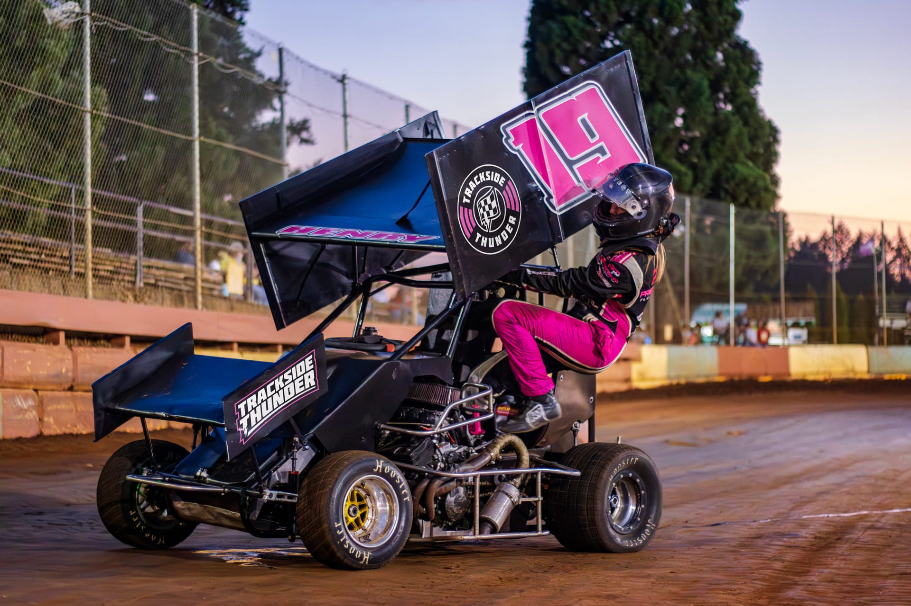
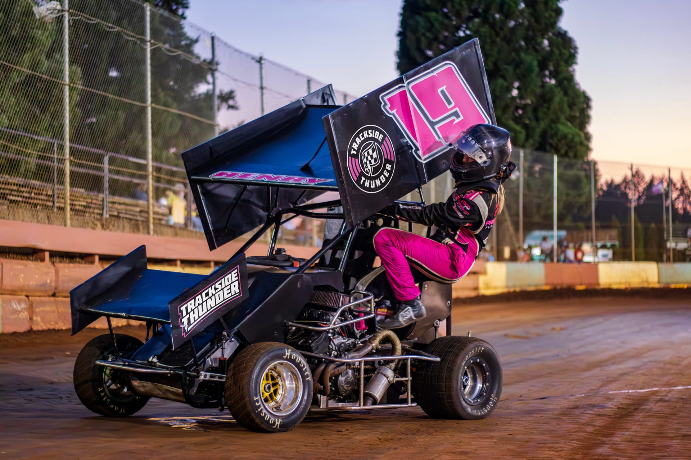

Introduction
Trackside Thunder is an upcoming podcast, expected to launch in 2026. The name gives a nod to both the podcast’s subject matter, dirt track racing, and the show’s host — Thunder Jones, announcer for River City Speedway in St. Helens, Oregon.
Starting from scratch, the goal was to create a brand that felt established from Day One — credible enough to stand alongside long-running motorsports media, while remaining flexible enough to evolve as the podcast grows.
- Portfolio relevancy: While this project focused on brand identity rather than product UX, it relied on the same core skills: systems thinking, scalability, constraint-based decision making, and designing for long-term, multi-platform use.
Gameplan
- Be unique: Avoid generic podcast imagery, such as a microphone, and create something distinct and identifiable
- Future proof: Focus more towards clean and timeless design for brand longevity and stability
- Express personality: This isn’t a tech company, lean into the energy and charisma of dirt track racing
- Merch-minded: Racing offers large marketing opportunities; easily translate to clothing and promotional merchandise that could be showcased in a variety of ways at the racetrack
Mind Mapping
- Purpose: By mapping out keywords and attributes associated to the brand/subject matter, design concepts can be connected back to a strategy, grounding design decisions to a targeted theme.
This exercise helped narrow the brand keywords toward controlled chaos and storytelling, which later influenced the design direction of the wordmark and icon.

With the design principles defined, the next step was translating strategy into a primary visual mark that could scale across platforms.
Logo Variants
Similar to how a toolbox contains different tools for different tasks, additional logo variants were created to increase brand depth and utility across applications. By repackaging the brand's visual elements into different formats, a more comprehensive design system is created, instead of being limited to a one-size-fits-all, single-use logo.
Tagline
There may be instances when an explanation of what the brand does is needed. The tagline of Short Track Storytelling was created as a descriptor for the racing podcast, with some memorable, repeating alliteration: (S)hort (T)rack (S)tory(t)elling.
Pulse Patch
A true, 1:1 square aspect ratio, the Pulse Patch offers versatility in a compact package with a classic and established feel. The subtle design cues of radiating lines hint at both the sound waves of podcast audio and the echoing sounds from the announcer's P.A. system. The Pulse Patch was designed with marketing and branded merchandise in mind — suitable for shirts, hats, stickers, and other applications.
T-Bolt Pulse Patch
An alternate version of the Pulse Patch swaps out brand assets in the center cap, displaying the T-Bolt icon instead of the primary flag icon. This variant demonstrates the flexibility and modularity of the brand's visual identity, enabling many different looks while maintaining consistency.
Bullring Badge
The extended version of the primary logo with additional visual elements, including the racetrack border that surrounds and defines the badge's shape.
Breakdown
This section takes a deeper look at the design rationale behind each core brand element: the icon, the wordmark, and the T-Bolt. Subtle, sub variations were taken into account in order to have visual consistency across all applications.
Icon
The brand’s primary visual identifier. Balancing the concepts of podcast storytelling and the controlled chaos of dirt track racing, the icon represents the core theme of the podcast—conversations about racing.
Icon Adjustments
Attention to detail was given to properly invert the icon, ensuring the flag's outline is always dark and the flag's inside is always light. This goes beyond simply changing the color of the icon, the icon structure needs to be changed to preserve highlights and shadows when color is inverted.
In this example the icon on the left is filled in with white, and filled in with a dark color on the right. These two different icon variants help maintain visual consistency across both light and dark backgrounds and are optimized for both scenarios.
Early Concepts
A glimpse at earlier concepts that were explored for the icon.
Submark
An abbreviated version of the wordmark, the T-Bolt is the brand’s visual identity reduced down to it’s most minimalist form. This is intended to be used in a support/utility role within the identity system, reserved as an accent element or when small display sizes are needed (e.g. app icon or favicon).
Submark Adjustments
As with the primary icon, similar visual treatments have been applied to the submark so that the two icons can be swapped out interchangably, if needed.
Brand Elements
A brand's visual identity is more than just how a logo looks, there are many other supporting elements to consider as well. This section takes a look at that supporting cast, which include: color, typography, patterns, and a brand mascot.
Colors
Connecting to the thunder name, the brand colors pull inspiration from dark, stormy skies and thunderstorm scenes.
Much like the opposing themes of controlled chaos and storytelling that were established earlier, the brand colors reflect that same approach: A calming, reserved purple, paired with a contrasting, higher energy yellow.
Mustard
Secondary
#FFD655
Steel Red
Tertiary
#CB4848
Typography
While not immediately needed at the time of this project, establishing the typography hierarchy at this stage helps create a smoother transition to future web and social media applications.
- Molot: A bold, chunky, all-caps typeface that should be reserved only for primary headlines to limit visual overload and connect back to brand’s wordmark. This will be used for: the wordmark, H1, and H2.
- Mulish: A clean, geometric, and highly legible typeface to contrast Molot. With multiple font weights available, it enables the design system to have adequate flexibility and versatility. This will be used for all remaining text styles, including: H3, H4, subheadings, body text, and label text.
Patterns
Reusing the T-Bolt, two different patterns were created that could be used in backgrounds or as an accent element to provide additional texture.
Brand Mascot
Pulled from the pile of used takeoffs and mounted in the press box, M.C. Sidewall gives a face and personality to the brand for greater marketing depth. Inspired by Minor League Baseball logos, the mascot provides a connection back to the racing themes and the podcast host (racetrack announcer).
Portrayed as an announcer, the brand mascot could be used to fill a fictional spokesman role within the brand. Situations where the mascot might appears include contact forms or on brand announcements.
Postmortem
If this project were to continue, the next step would be formalizing the design system into lightweight usage guidelines to support additional collaborators and platforms. Additionally, if the podcast grows into producing video content, there is an opportunity to expand the brand's identity through motion design. This project reinforced the importance of designing brand systems with the same precision as product systems — prioritizing scalability, constraints, and long-term use over one-off aesthetics.


 
